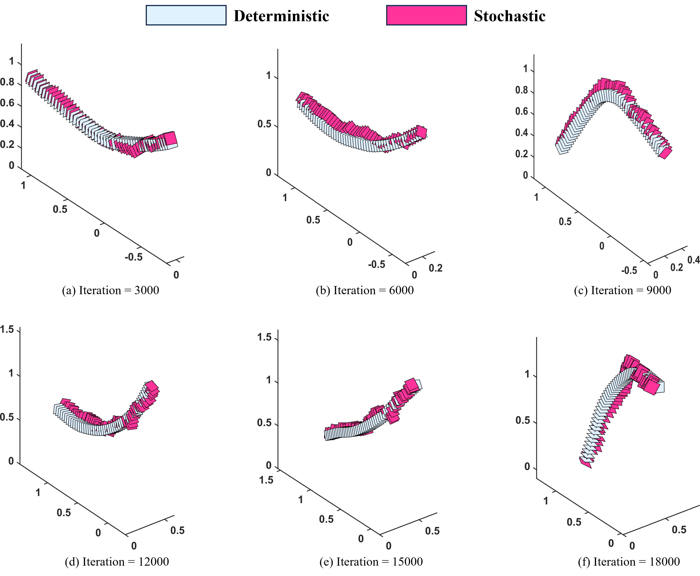
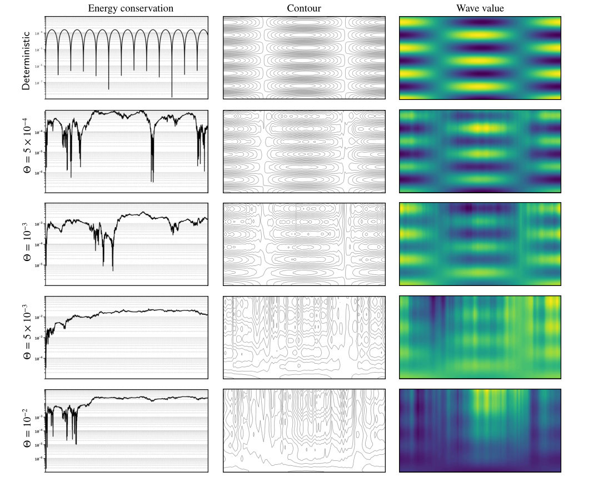
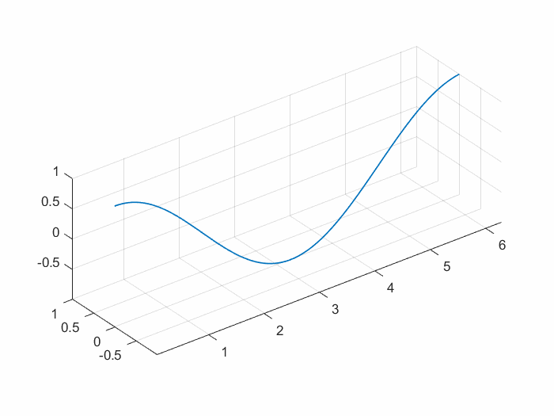
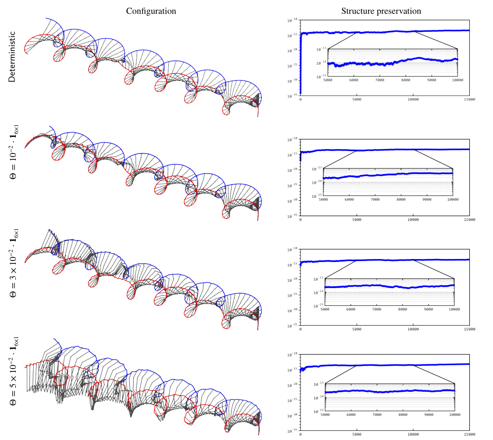

Stochastic Geometrically Exact Beams: Continuous-Time Geometric Principles and Variational Discretizations

Abstract
Geometrically exact beams naturally arise in physical phenomena and engineering practice for modeling flexible structures, such as soft robotic manipulators and DNA structures. In practical applications, the beam dynamics are subject to uncertainties and fluctuations that are not captured by a purely deterministic model. However, to the best of our knowledge, there appear to be no geometric integrators for stochastic geometrically exact beams in a variational formulation.
In this paper, we introduce variational principles for the dynamics of stochastic geometrically exact beams, in both continuous- and discrete-time settings. By introducing perturbations via stochastic potentials and stochastic kinematics, we derive the equations of motion from a variational viewpoint. The resulting stochastic geometric integrators simultaneously discretize time and space in a parallel manner, which provides a distributed computational framework for solving the stochastic dynamics of complex beam systems.
In particular, the proposed integrators are shown to be a stochastic extension of the well-known deterministic staggered leapfrog scheme for the wave equation, and also a stochastic extension of Yee's scheme for spatially one-dimensional computational electromagnetism. Numerical results are shown to demonstrate the effectiveness of the proposed approaches.
Geometrically Exact Beams

Example 1: Stochastic Bending Beam
Example 2: Stochastic Wave Equation

Deterministic wave equation

Stochastic wave equation (\Theta = 5e-4)
Stochastic wave equation (\Theta = 1e-3)
Stochastic wave equation (\Theta = 5e-3)
Stochastic wave equation (\Theta = 1e-2)
Example 3: Stochastic Flying Spaghetti
